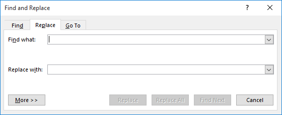
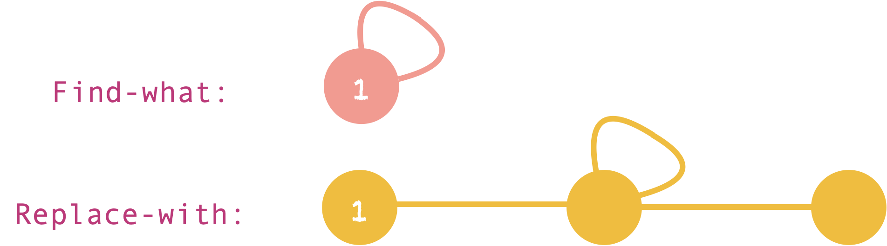
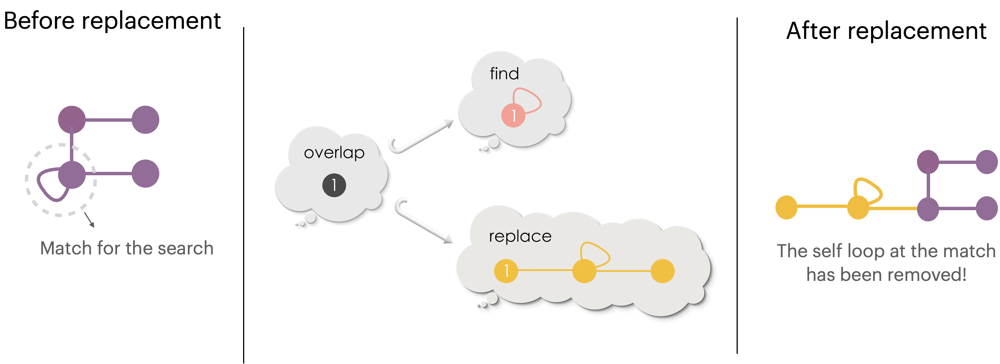
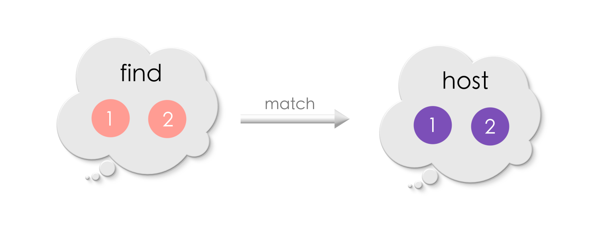
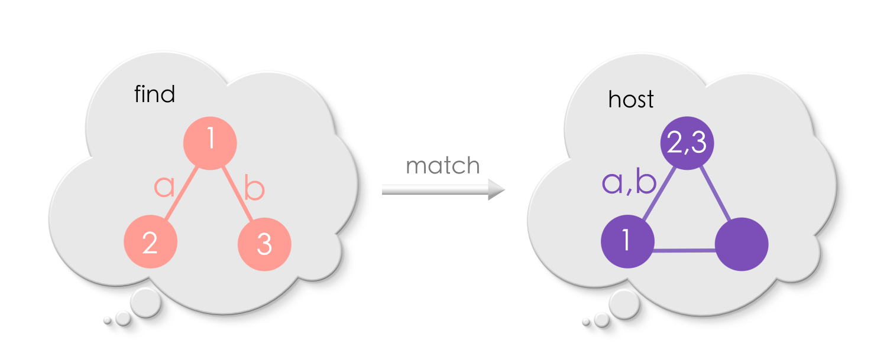
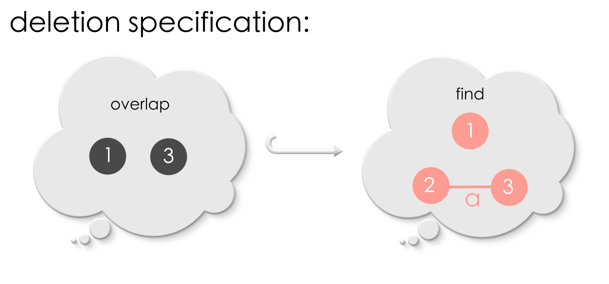
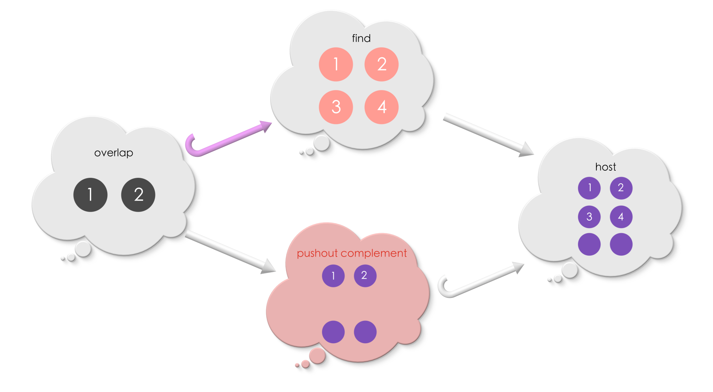
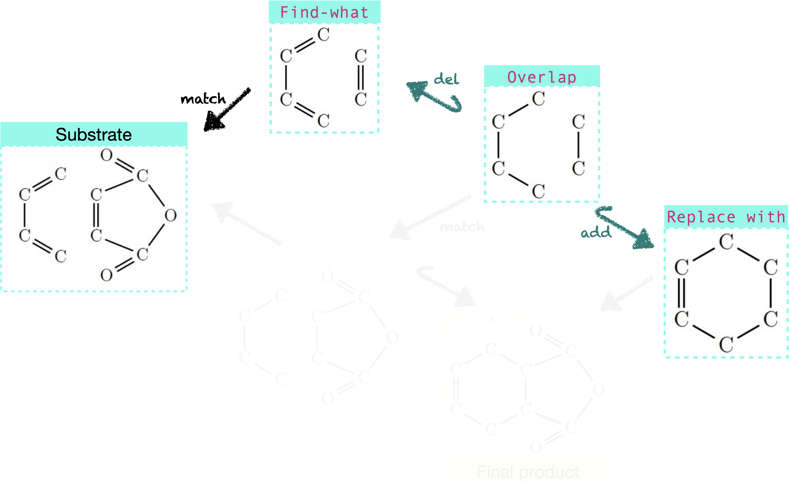
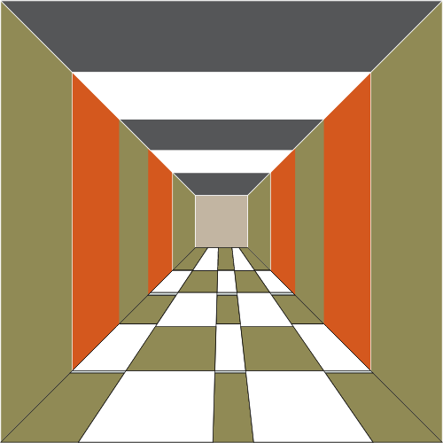

Chapter 6: Evolving Graphs#
6.1 Introduction#
The “Find-and-replace” feature of text editors is one of the most powerful innovations of the 20th century. Inspite of the unavailability of statistics, the advantage of this feature is tangible and undeniable! Beyond text editors, the concept of “find and replace” has also caused much chaos in the world! When the European conquerors “found” native Americans settlements in Canada, they decided to “replace” the native culture by sending an entire generation of native American children to special missionary schools. This has resulted in trauma and chaos that continues well into the current times. Or a country waging war over another country to replace the exisiting government for political reasons! Or the large-scale replacement of forests by industries and settlements has adversely impacting global climate. We know in hindsight this approach has lead humanity to face issues bigger than they the ones it intended to solve!
So, what was missed in the decision making process?
Let us consider a fun and non-political example – the struggle of qutting sugar. Here is a simple explanation of a why quitting sugar is so hard! A usual thought-process behind attempting to quit sugar is:
{kind=link}
But the reality is:

Image source: https://www.youtube.com/watch?v=86uC5fgraiI
because, the connections are broken causing the system to experience instability:

(Naively) Being healthy and eating sugar makes a person happy in a different ways. Hence, removing sugar results in a broken connection and an unstable structure! The result is usually to restore stability by brining (more) sugar back! Even though this example is oversimplistic, it drives home the message connections playing an important role in driving our lives and why careful considerations of connections is necessary to make a positive change.
If we want to make a change, it is recommended to start with something simple. The simple thing we shall do in this chapter is to build a way to make changes to an existing graph in a “good” way. By good, we mean that we do not end up with broken connections, and make precisely the changes that are intended.
Making changes to a graph means adding new vertices/edges or removing existing vertices/edges or both. And these changes happen over particular region(s) of the graph (like a textual find and replace).
A lot of concepts in the world around us are modelled as graphs. Hence, building a way to changing an existing graph that is guaranteed to be good is much more than just a theoretical exercise.
Let us begin!
Given a pattern (a graph), and its replacement, our mission is to “find” the pattern in any host graph and “replace” it in a good way!
6.2 Specs for “find and replace”#
Let us say, we have a document in which we would like to replace some text by some other text. The Microsoft Word software provides an interface such as the one shown in the picture below for performing such “find-and-replace”.
{kind=link}
Pause and ponder
Let us say, we have a graph. How would the interface for find-and-replace in graphs look like?
To begin with, let us think what would be filled in the “Find what:” and “Replace with:” boxes.
The Find what box will take in a graph. This is the search pattern that will be matched in a host graph. The Replace with box will also take in a graph. This is the pattern that will replace the match found.
For example,

Let us try applying the above “find-and-replace” to the host graph below.

We must first find a match of the Find in the host graph. Can you find one?

Now let us, try replacing the match with the Replace. But, there seems to be two different ways in which the match can be replaced, as shown below!
{kind=link}
So what are we missing? In text documents, there is only one way of replacing a text by another once a match has been found. But in graphs, there are multiple ways of replacing one graph by another unless we say how the Find and the Replace relate.
For example, in Replacement-1, the middle vertex and the self-loop of the Replace is placed at the match.
{kind=link}
In Replacement-2, the left-most node of the replacement at the match is placed at the match.
{kind=link}
For the find-and-replace operation to choose precisely one of these replacements, in addition to providing the graphs for Find and Replace, we must also specify where the search pattern and its replacement meet or overlap.
Pause and ponder!
How would you specify overlap Find and Replace?
We know from Chapter 5, how to specify overlap between two graphs :) Do you remember the diagram with two radiating graph morphisms?

We will use the same idea to specify the overlap between Find and Replace. An extra requirement will be that the morphisms need to be injective. This ensures that, no two vertices of Find overlap with the same vertex of Replace, and vice versa. Similarly, no two edges of Find overlap with the same edge of Replace, and vice versa.
Puzzle 1
How do the graphs Find and Replace overlap in case of Replacement-1 and Replacement-2?


Solution
{kind=link}
{kind=link}
Replace = Delete and Add#
{kind=link}
Let us now have a closer look at the replacement procedure.
During the replacement procedure, the vertices and edges of Find which do not overlap with Replace are removed from the match. For example, in the picture above, the self-loop of the search pattern is outside the overlap region. So, it is removed from the host graph at the match during the replacement procedure. Only those vertices and edges in the search pattern which overlap with the replacement are alone retained. From this view point, the morphism from overlap to Find is a rule for deletion (of vertices and edges at a match).
During the replacement procedure, the vertices and the edges of (Replace) outside the overlap region are added to the host graph at the match. For example, in the picture above, the unlabelled vertices and edges of Replace are outside the overlap region. We could see that they are added to the host graph during the replacement. From this view point, the morphism from overlap to Replace is a rule for addition (of vertices and edges at a match).
Note that the overlap shape remains unchanged during the replacement. The overlap is precisely what remains after removing the edges/vertices of Find as per the deletion rule.
Thus, a specification for “find-and-replace” in graphs consists of a deletion rule and an addition rule:

Neat, huh?!
Puzzle 2
Find the overlap between Find and Replace for the following replacement:

Solution

Puzzle 3
Apply the following replacement in the host graph. The match between Find and the host graph is indicated by the matching numbers on their vertices.

Solution

Key points
The interface to find-and-replace needs to have:

The injective morphism into
Findis a specification for deletion.The injective morphism into
Replaceis a specification for addition.
6.3 Finding a match#
The next step is to answer how to find a match of Find inside a host graph, similar to finding some text in a document. When a text editor receives an input like this, it find (exact) matches of the string of characters “Happy Priyaa”.

However, in graph, connectivity matters. So when matching Find in a host graph, rather than an exact match, we look for matches which have similar connectivity as Find. Do the words “similar connectivity” a ring bell? Similar connectivity implies graph morphism.
What is a match?
A match is a graph morphism from Find to a host host graph.
Let us suppose we want to find a match Find in this host graph:

There are two possible matches. The mapping (match) is shown using matching labels for the vertices and the edges.
{kind=link}
The below match, has vertices “1” and “2” in the search pattern, mapped to the same vertex in the host graph.
{kind=link}
The first match is an injective morphism whereas the second one isn’t
Let us strengthen our understanding!
{kind=link}
Solution for Puzzle 4
An exact match:

Non-injective match:
{kind=link}
As you notice, there can be many possible (or no) matches of Find in the host graph.
Key points
A match in a host graph is given by a morphism from Find to a host graph! There can be multiple or no match of Find in a host.
6.4 Removing vertices and edges from a graph#
We now know how to specify “find-and-replace” in terms of deletion and addition rules, and how to specify a match. What remains is to apply these specifications to perform the find-and-replace!

We will begin with the deletion, that is removing vertices and edges at the match!
Finding a match to remove vertices/edges#
Removing edges and vertices require care. Suppose, a vertex in a match is specifed to be removed. There may be edges which are connected to to this vertex in the host graph. In that case, deleting the vertex will lead to zombie graphs which has dangling edges (edges whose end(s) is not connected to any vertex).
The following example illustrates this situation.
Suppose, we have the following rule for deletion: vertex 2 and edge ‘a’ will be deleted (from the host at a match) since they do not overlap!
{kind=link}
Suppose we are given the following match of Find in a host graph. Can you see why this match is bad?
{kind=link}
Removing vertex 2 from the host graph will result in a dangling edge, see the diagram picture below!

An appropriate match that produces no dangling edge will be:

For the above match, removing vertex ‘2’ and edge ‘a’ leaves the graph intact!
Another situation that needs care is that a match must not identify a vertex to be deleted and a vertex that needs to be retained (a vertex which overlaps) of Find to the same vertex in the host graph. In the deletion rule, vertex 1 must be retained and vertex 2 needs to be deleted. However, the following match identifies vertices 1 and 2 of the search pattern to the same vertex (“1,2”) in the host graph, which is bad!
{kind=link}
So what should be done now – keep the vertex “1,2” or delete the vertex “1,2” from the host graph? Either choices are incorrect. A good match, in the first place, MUST avoid identifying vertices 1 and 2 of Find into the same vertex in the host graph. This is called the right identification condition.
Key points
A good match of a search pattern (for deletion of vertices and edges) will:
satisfy the no-dangling edge condition.
identify vertices / edges to be deleted and vertices / edges to remain seperately, called the right identification condition.
We will talk more about “finding a good match” once the algorithm to perform the deletion rule is set up.
Performing deletion#
We now have a deletion rule, a host graph and a match for Find in the host graph. As before, let us draw a diagram of all the information we have:

The new graph which results after performing the replacement (deletion) will have:
All those vertices and edges in the host graph which are outside the match, and
Only those vertices and edges inside the match which are under the
overlapinFind.
This means that the overlap will have a match in the new graph determined by the original match in the host graph. The new graph will have an injective morphism into the host graph.
{kind=link}
The above square commutes! Does this shape remind you of pushouts from chapter 5? It turns out that, the host graph is the pushout of Find and the new graph!!
This indeed makes sense, because, Find includes vertices and edges which has been removed. Glueing together Find and the new graph along the overlap must give the original host graph!
Since the new graph completes a pushout square we shall call it as the Pushout complement.
Note
Complement means the thing that completes or brings to perfection.
A pushout complement is a pushout completement!
Let us look at an example of computing “pushout complement”
Example 1
{kind=link}
The nodes exclusive to Find must be removed from the host graph. Thus, the pushout out complement must include:
all the parts of the host graph not under the match, and
only those parts of the match which is included in the overlap.
In this example, the pushout complement includes all the edges and vertices in the host graph that is not under the match (all unlabelled vertices and edges), and includes those vertices and edges in the match which are under the image of overlap (vertices 1 and 2).
Puzzle 5
What is the pushout complement?
This problem has a coarse-grain match. Vertices “1” and “2” of Find what are sent to the same vertex in the host graph. Simiarly vertices “3” and “4” are sent to the same vertex in the host graph.
{kind=link}
Solution for Puzzle 5
{kind=link}
{kind=link}
Solution for Puzzle 6
The pushout complement includes all the edges and vertices in the host graph that is not under the match (all unlabelled vertices and edges),and includes those vertices and edges in the match which are in Graph-2.
{kind=link}
Managing the requirements of a match#
In programming, there is a concept called “edge case”. These are special situations where a code will fail to produce appropriate results. For example, a bug that occurs in only iPhone. They are called “edge cases” because these situations lie outside the normal flow of a code / algorithm and custom extra code is added for their special handling. There is an anecdote, “Edge cases are impossible to avoid, so keep them simple”.
Does our procedure to remove vertices and edges at a match have edge cases?
Million dollar questions:
What will happen when a match that violates the “no-dangling edge” requirement is supplied for computing the pushout-complement?
What will happen when a match that violates the “right identification” requirement is supplied for computing the pushout-complement?
If the pushout-completement produces bad results, then these violations will be edge cases which needs to be handled outside the completement procedure – like writing an algorithm to first check if the match supplied is appropriate.
The good news is that the universal nature of pushouts guarantee us that pushout-complement will exist ONLY for appropraite matches!! That is, replacement will be done only when the match is appropriate. Otherwise, the procedure will not proceed further! Thereby, there are no edge cases in our procedure!!! To drive home home this message, here are two examples. We leave it to the reader to check if a pushout complement exists in these cases.
{kind=link}
{kind=link}
We did all the heavy lifting early-on by relying on relational thinking, considering all the relevant relationships, and getting the plumbing right! The pay off is that things flow smoothly without the need for extra intervention!
The procedure is the guard rail!
A final question we must ask is that are pushout complements unique? The pushout completement graph computed for a deletion rule is unique because the deletion rule is an injective morphism.
Key point
Vertices and edges of a graph is removed by computing pushout complement.
6.5 Adding vertices and edges to a graph#
We applied the deletion rule to remove vertices and edges from a host graph at the match. We called the resulting graph a pushout complement. We are now ready to add vertices and edges specified by the addition rule. However, we will now work with the pushout complement we computed in the previous step. The idea is that we first deleted, we are now ready to add. That will complete our replacement procedure! Hurray!
As always, let us begin by drawing a diagram of the gre relationships we got! The advantage of drawing digrams is that it arranges information in an intuitive way that it makes it easier to “see” the solution!

We shall focus on the lower half of the diagram now where addition of vertices and edges shall proceed!

We now want to compute a new graph by adding the vertices and edges exclusive to Replace to the host graph at the match! Do you see how?! Does the shape of the diagram ringbells?
Yes, the answer is
Pushouts!!
By computing the pushout of the above diagram, we glue vertices / edges to be added to the pushout complement along the overlap. Our completed diagram looks as follows now:

Let us try out some examples to make sure we are right! We start from the example we saw in the previous section!
Example 1 continued …
Suppose, we have an addition rule like this, and the match obtained at the pushout complement step:

The Replace has an edge between vertices 1 and 2. Since this edge is exclusive to Replace (overlap does not have this edge between 1 and 2), this edge will be added to the host graph. Computing the pushout, precisely does this to the pushout complement!

The complete picture of the replacement procedure (deletion and addition) for Example 1 is as follows:
We have the following replacement rule and a match in the host graph.

Computing the pushout complement followed by the pushout completes the replacement procedure!

{kind=link}
Solution for Puzzle 7
The Replace has an edge between vertices 1 and 2. Since this edge is exclusive to Replace (overlap does not have this edge between 1 and 2), this edge manifests as self-loop in the pushout.

Puzzle 8 (continued from Puzzle 6 )

Solution for Puzzle 8

Key point 1
Vertices and edges are added by computing pushout.
Key point 2: Find-and-replace machinery for graphs
A thing of beauty!!
A search pattern (Find what) found in a graph is carved into another pattern (Replace with) by computing pushout complement and followed by pushout.
{kind=link}
Common literature calls our “Find-and-replace machinery” for graphs as Double Pushout Rewriting (DPO).
6.6 A few use cases of find-and-replace#
Chemistry#
In chemistry, click reactions give high yield with low requirements and form only harmless by-products. A specific click reaction called the Diels-Alder’s reaction is one of the most useful ones in material design. Discovered in 1928, Otto Diels and Kurt Alder were awareded Nobel prize for their fascinating discovery.

In this section, we will see that Diel-Alder’s reaction is a double pushout rewrite - the “Find and replace” machinery which uses pushouts. In this example, we will view molecules as undirected graphs where atoms are vertices and the chemical bonds are edges. Diel-Alder’s reaction is the following, “Find-and-replace” rule for a specific molecule (we do not worry about the names of these molecules because that is not the point).

Standard chemistry books write this reaction as follows:

Let us now use this rule on a substrate molecule which will act as the host graph.
{kind=link}
Applying the double-pushout find-and-replace, we precisely get the final product of this chemical reaction!!

Game design#
Bob is an expert in designing game layout. He designs environment for games. He uses a layout editor for designing cool layouts. The layout keeps track of Bob’s design as an directed graph components of the environment are vertices. Two vertices are connected by an arrow if the player can navigate between these two components in the game in the direction of the arrow.
Bob is currently designing a game of Dungeons and Dragons, and have added two rooms to his dungeon – Room 1 and Room 2, and made Room2 directly accessible from Room 1.
However, Bob thought for a moment, and told to himself, “Hey, how about a corridor in-between?”.
{kind=link}
Now a corridor needs to be added between Room 1 and Room 2, and arrows need to be redrawn as follows!

Reshaping directed graph follows the same idea as undirected graphs. The find-and-replace rule shall be applied to reshape Bob’s game layoout!
6.7 Algebraic Julia for find-and-replace in graphs#
This section will demonstrate how graph “find-and-replace” can be performed in a computer using the Algebraic Julia library! We provide the Algebraic Julia code for the puzzles in this chapter. The reader is invited to run these code examples and have fun!
Finding matches of a search pattern#
Puzzle 4
Find at least two matches of the search pattern in the host graph.

# Puzzle 4 solution
#------------------
using Catlab
find = path_graph(SymmetricGraph, 3)
host = cycle_graph(SymmetricGraph, 3)
# There are 12 matches because the path can start
# at any of the three vertices of the cycle.
# There are two directions each can go. And for each we decide
# for both edges whether they go clockwise or not,
# so that is 3 x 2 x 2 independent choices.
matches = homomorphisms(find, host)
# uncomment the following line to visualize the `find` graph
# to_graphviz(find)
# uncomment the following line to visualize the host
# to_graphviz(host)
Is this a pushout complement?#
Example 2
(Need to be illustrated in the style matching above puzzles)
Is there a pushout complement? If not, why?

# Example 2 solution
#--------------------
using Catlab
using AlgebraicRewriting.CSets
overlap = SymmetricGraph(1)
find = path_graph(SymmetricGraph, 2)
host = path_graph(SymmetricGraph, 3)
# There is only one homomorphism (up to symmetry)
# So we can pick an arbitrary one
del = homomorphism(overlap, find)
match = homomorphism(find, host)
# We can check whether or not the pushout complement exists
can_pushout_complement(del, match)
# We can get a list of the specific violations
gluing_conditions(ComposablePair(del, match))
Example 3
Is there a pushout complement? If not, why?

# Example 3 solution
#-------------------
using Catlab
using AlgebraicRewriting.CSets
overlap = SymmetricGraph(1)
find = path_graph(SymmetricGraph, 2)
# There is only one homomorphism (up to symmetry)
# So we can pick an arbitrary one
del = homomorphism(overlap, find)
host = @acset SymmetricGraph begin V=1; E=2; src=[1,1]; tgt=[1,1]; inv=[2,1] end
match = homomorphism(find, host)
# We can check whether or not the pushout complement exists
can_pushout_complement(del, match)
# We can get a list of the specific violations
gluing_conditions(ComposablePair(del, match))
Computing double-pushouts#
Puzzle 5
What is the pushout complement?

# Puzzle 5 solution
# -----------------
using Catlab
using AlgebraicRewriting.CSets
Overlap, Find₅, Host₅ = SymmetricGraph.([2, 4, 6])
del = ACSetTransformation(Overlap, Find₅; V=[1,2])
match = ACSetTransformation(Find₅, Host₅; V=[1,1,2,2])
O_PC₅, PC_H₅ = pushout_complement(del, match)
to_graphviz(dom(PC_H₅))
# Puzzle 7 solution (continuation from puzzle 5 solution)
#--------------------------------------------------------
# Monic=true enforces that the two vertices in Overlap are not mapped to a
# single vertex in the single-edge graph.
add = homomorphism(Overlap, path_graph(SymmetricGraph, 2); monic=true)
fromR, fromPC = pushout(O_PC₅, add)
to_graphviz(codom(fromR))
Puzzle 6
What is the pushout complement?

# Puzzle 6 solution
# -----------------
using Catlab
using AlgebraicRewriting.CSets
Overlap = SymmetricGraph(2)
Find₆ = SymmetricGraph(3)
add_edge!(Find₆, 2, 3)
Host₆ = path_graph(SymmetricGraph, 6)
del = ACSetTransformation(Overlap, Find₆; V=[1,3])
match = homomorphism(Find₆, Host₆; initial=(V=[5,1,2],))
# PC stands for Pushout Complement; O stands for overlap; H stands for host
# O_PC₆ is the map from the overlap to the PC
# PC_H₆ is the map from the PC to the host
O_PC₆, PC_H₆ = pushout_complement(del, match)
to_graphviz(dom(PC_H₆))
Puzzle 8 (continued from Puzzle 6 )
Complete the pushout
# Puzzle 8 solution (continuation from puzzle 6 solution)
#--------------------------------------------------------
# Monic=true enforces that the two vertices in Overlap are not mapped to a
# single vertex in the single-edge graph.
add = homomorphism(Overlap, path_graph(SymmetricGraph, 2); monic=true)
fromR, fromPC = pushout(O_PC₆, add)
to_graphviz(codom(fromR))
6.8 Relational thinking is hard but good!#
Congratulations for making it this far! Relational thinking might feel hard but it also brings so much value to our thinking and how we interact with the world around us! Here is our two cents on why we think so!
Relational thinking shifts vocabulary#
We would first like to bring reader’s attention to the some vocabulary common in practice since language influences thinking and vice versa.
The idea of “Find and replace” is a crude one in the sense that it is unaware of the context of replacement. A text editor will allow me to replace “truth” by “lie” anywhere in a document. Context-unaware find and replace leads to chaos.
The mathematics we used to “find-and-replace” in graphs tells us that it is not a replacement, rather it is a careful integration of a new pattern in the place of an exisiting pattern. To integrate is organic and harmonoius by nature! While to replace has an air of superiority about it! Replace is useful – replacing inflated tyres, replacing broken chain, etc.! However, in situations involving multiple interconnected entities, relational thinking recommends a shift in vocabulary from “Find-and-replace” to “Find-and-integrate” ot become a whole!
Slogan
Replace “replace” by “integrate”
This slogan probably is the answer to all the political issues which have been brought up at the beginning of this chapter.
The order of processes#
Let us take a moment reflect on the process of modifying a graph guided by relational thinking!
As we saw in this chapter, we modify by searching for a pattern in a graph. Once a match is found, we first remove and then add vertices and edges as indicated by the pattern to be integrated. Loosely speaking, in a free world, nothing prevents one from switching the order of these operations – first add new vertices and edges and then remove, even though remove-first and add-next is more economic. An add-first and remove-next procedure must handle accidental errors which are otherwise absent in the other order:
Removing what has been added
Adding over the removal region.
Hence, to remove first and to add next is elegant and as well as cleaner!
As we saw in double pushouts, relational thinking precisely follows this order without any manual intervention! Somehow, the mathematics ‘knew’ that it must first remove by computing pushout complement and then add by computing pushout over that complement! Switching the order is not possible. It is a wonder how did the math get the ordering right?! Even though it is a mystery, there is a message that is being conveyed.
Slogan
Think relationally to get it right rightaway!!
6.9 Summary#
For modifying graphs, we first compute pushout complement followed by a pushout! All the edge cases that may otherwise occur when removing edges and vertices are automatically handled due to the universal nature of pushout! And finally,

Footnotes and References#
[1]. Few of the examples and puzzles in this chapter were inspired by the handout titled “Double Pushout Rewriting in Chemistry” authored by Georg Fischer, and Hannah Gschwentner, and the blog post “Double pushouts on Graphs” by Mark Gritter!